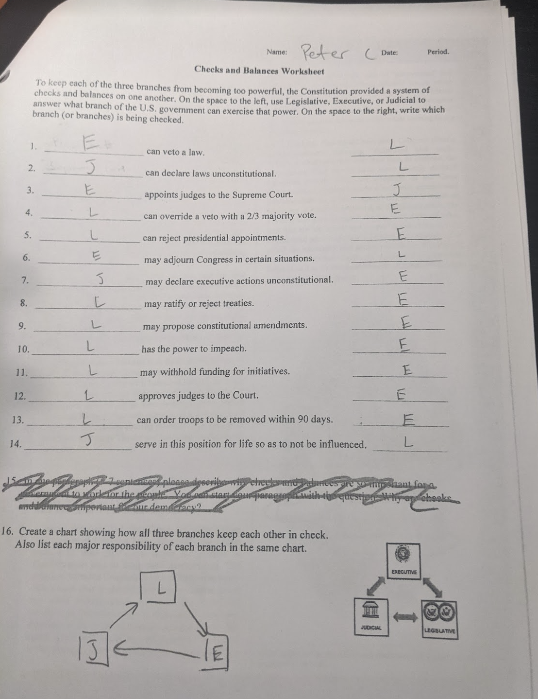

Backlinks
Table of Contents
- 1. What arguments can you give for and against the use of the Electoral College to select the president? In thinking about your response, consider the following facts: On five occasions in American history- 1824, 1876, 1888, 2000 and 2016- the presidential candidate who won the popular vote did not win the Electoral College vote. On other occasions - including 1860,1912, and 1992- the candidate who won the most popular votes did not win an absolute majority of the popular vote but won a significant majority in the Electoral College.
- 2. What are the advantages and disadvantages of having judges appointed, not elected to serve “During good behavior”?
- 3. Should the composition of the Supreme Court be required to reflect the political, economic, racial, ethnic, geographical and gender diversity of our country? Why or why not?
- 4. Should the Constitution be amended to require judges to retire at a specific age or after a certain number of years as a judge?
- 5. It has been argued that the judiciary is the least demoractic branch of our national government. Do you agree or disagree? Why?
- 6. In what ways do the limitations on the national and state governments protect individual rights?
- 7. How did the delegates at the Philadelphia Convention deal with the issue of slavery? Why did they choose to take the approach they did?
- 8. Please fill out the worksheet regarding The Three Branches of Government.
- 9. Please fill out the worksheet regarding Checks & Balances.
1 What arguments can you give for and against the use of the Electoral College to select the president? In thinking about your response, consider the following facts: On five occasions in American history- 1824, 1876, 1888, 2000 and 2016- the presidential candidate who won the popular vote did not win the Electoral College vote. On other occasions - including 1860,1912, and 1992- the candidate who won the most popular votes did not win an absolute majority of the popular vote but won a significant majority in the Electoral College.
- For:
- The American people do not know what is best for them, so let the "educated" electors vote for the president
- Gives more power to smaller states
- It is easier to count the votes of the electors compared to the votes of the American public
- Against:
- It is not alawys representative of the population of the United States (see the examples provided in the question above), and thus is less democratic
- Now, presedential elections only depend on a couple of key "battle ground" states and not on the general opinion of the US.
- Some people's votes are worth less than others
- does not take into account the difference in votes
2 What are the advantages and disadvantages of having judges appointed, not elected to serve “During good behavior”?
- Advantage:
- the judges do not have to make decisions based on the opinion of the people that voted them in, they can focus on making a decision that is morally correct.
- Disadvantage:
- The president will appoint a judge that is of their political party, so the decision making of the Supreme Court is dependent on who dies when.
3 Should the composition of the Supreme Court be required to reflect the political, economic, racial, ethnic, geographical and gender diversity of our country? Why or why not?
- I think that the composition of the Supreme Court should reflect the political, economic, racial, ethnic, geographical and gender diversity of our country, because the decions that they make will impact people off all of those identity groups, and thus all of those groups need to be a part of the interpretation process.
4 Should the Constitution be amended to require judges to retire at a specific age or after a certain number of years as a judge?
- I think that there should be a upper age limit, because older people don't have to live with the consequences of their decisions.
5 It has been argued that the judiciary is the least demoractic branch of our national government. Do you agree or disagree? Why?
- I agree, because to become a judge you are not elected into your position, so you do not reflect the popluation of the US. But at the same time, just because the branch is not democratic, it does not mean the branch is bad. I think the Framers intetionally made hte judiciary branch undemocratic so that they could focuse on "morality" over the opinion of the United States.
6 In what ways do the limitations on the national and state governments protect individual rights?
- The limitations prevent both the national and state governments from getting too much power, and thus protect indivual rights.
7 How did the delegates at the Philadelphia Convention deal with the issue of slavery? Why did they choose to take the approach they did?
- they avoided the issue and gave states the power to make the decision, likely because the topic was highly controversial and might have prevented states from joining the United States.
8 Please fill out the worksheet regarding The Three Branches of Government.


9 Please fill out the worksheet regarding Checks & Balances.
